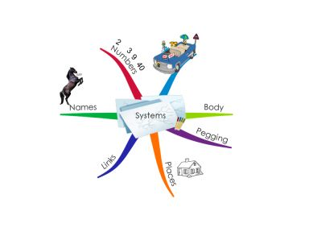
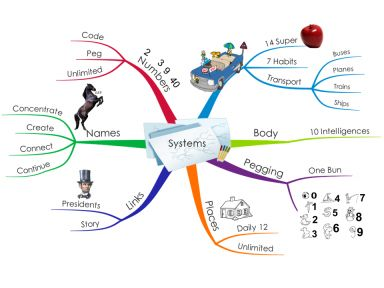
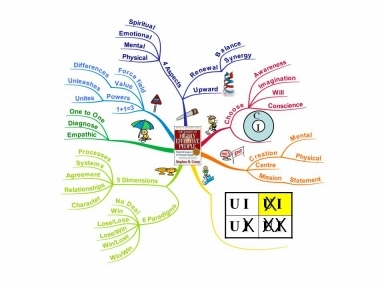

Any information can be represented as a drawing, painting, photograph or sculpture. Make an effort to turn key information that you need for your life into a picture so that you will be able to easily see it in your mind’s eye. Use art to remember… and have fun!
Another great way to get your creative brain working for planning and remembering is:
Mind Mapping (Registered trademark by Tony Buzan)
“Your memory system operates so quickly and effortlessly that you seldom notice it working.”
~ Daniel T. Willingham
One of the best ways to watch your mind and memory at work is through Mind Mapping. When you adopt this method into your life it will change the way you think. It is a powerful way to organize information, to think on paper, and get more out of your head.
Tony Buzan is the inventor of Mind Maps and has authored over eighty books. He created this amazing mind tool in the early 1970s and the method has evolved into one of the world’s most effective learning and thinking tools.
Tony calls Mind Mapping the ‘Swiss army knife for the brain.’ It is not only a method for expanding your memory, but a way to improve your thinking skills. Mind Mapping can be used for: memorizing, learning, presenting, communicating, organizing, planning, meetings, negotiating, and all types of thinking.
A Mind Map is a multi-sensory way of transferring your thoughts to paper. It is incredibly easy and simple to use. At first it may take a bit of practice, but then your brain will remember how to have fun, and your life and learning will never be the same again. Mind Maps are a wonderful way of structuring information, so that you can see the big picture and the details. With linear notes, which are lists and lines, you will never have the flexibility that you have with Mind Maps.
To be a successful Mind Mapper all you need is the following:
1. Your brain;
2. A blank piece of paper, the bigger the better, and turn it to landscape;
3. Lots of colored pens and pencils.
The best way to explain a Mind Map is to map something out. The Mind Map that I will be creating here is about all the systems that I have shared with you in this book.
With every Mind Map you start in the centre of a blank page with a central image. This central image is what the whole Mind Map is about; therefore I will call this central image ‘Systems’. As we now know images are memorable and stimulate more creativity.
Step 1:
Step 2:
Once you have your central image, then you connect branches to the central image and start branching out the headings. The main branches are all the memory systems we have covered.

Step 3:
Once we have our main branches, then we can connect second and third level branches to give more detail to each main branch.

We can add even more branches to the existing branches to help clarify ideas or give more detail. Remember to use only one word per branch. This aids your associating mind to bloom freely, and remember to add lots of images. Each main branch will also have one color, this helps visually to distinguish between different branches or content. A Mind Map can never end because your associating mind can always find just one more memory.
Mind Maps are entertaining; they are fun and make use of your creative brain. If you choose to stick with it, you will take your mind to a new level. You will improve your creativity, planning power, develop more of your brain, and increase your powers of memory and observation. You can use Mind Maps for a whole range of learning areas; they can be used very effectively to summarize large amounts of information, and to get the gist of what is being communicated.
Here is a Mind Map that I made of the book The Seven Habits of Highly Effective People.

You will notice that each main branch shows a concept that we remembered on The Car List. This Mind Map summarizes the key content from Stephen Covey’s whole book.
I created this Mind Map with iMindMap software; you can go to www.imindmap.co.za and download your free version of iMindMap basic today. There are many Mind Mapping computer programs out there, but nothing comes close to the flexibility and usability of iMindMap. Play with it, you will be surprised at how much you can achieve with this one thinking tool.